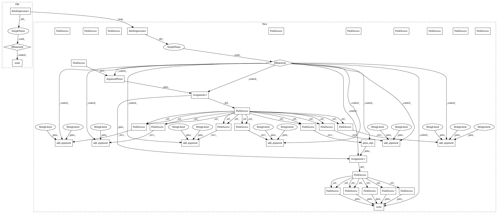

2205fce8ac9f1d9f01f81996f7deef9a7b197a8d,dataset/make_training_data.py,,,#,115
Before Change
Labels_out_ts)
if __name__ == "__main__":
main()
After Change
Labels_out_ts)
if __name__ == "__main__":
parser = argparse.ArgumentParser()
parser.add_argument("--size", "-s", type=int, help="size of the domain", default=28)
parser.add_argument("--n_domains", "-nd", type=int, help="number of domains", default=5000)
parser.add_argument("--max_obs", "-no", type=int, help="maximum number of obstacles", default=50)
parser.add_argument("--max_obs_size", "-os", type=int, help="maximum obstacle size", default=2)
parser.add_argument("--n_traj", "-nt", type=int, help="number of trajectories", default=7)
parser.add_argument("--state_batch_size", "-bs", type=int, help="state batch size", default=1)
args = parser.parse_args()
size = args.size
main(dom_size=(size, size), n_domains=args.n_domains, max_obs=args.max_obs,
max_obs_size=args.max_obs_size, n_traj=args.n_traj, state_batch_size=args.state_batch_size)
In pattern: SUPERPATTERN
Frequency: 3
Non-data size: 40
Instances
Project Name: kentsommer/pytorch-value-iteration-networks
Commit Name: 2205fce8ac9f1d9f01f81996f7deef9a7b197a8d
Time: 2020-10-01
Author: 16188477+shuishida@users.noreply.github.com
File Name: dataset/make_training_data.py
Class Name:
Method Name:
Project Name: kentsommer/pytorch-value-iteration-networks
Commit Name: 2205fce8ac9f1d9f01f81996f7deef9a7b197a8d
Time: 2020-10-01
Author: 16188477+shuishida@users.noreply.github.com
File Name: dataset/make_training_data.py
Class Name:
Method Name:
Project Name: GoogleCloudPlatform/python-docs-samples
Commit Name: a58d06de6c7eded0105b893841be7e600de50b60
Time: 2015-09-18
Author: sfan@google.com
File Name: storage/transfer_service/nearline_request.py
Class Name:
Method Name:
Project Name: GoogleCloudPlatform/python-docs-samples
Commit Name: a58d06de6c7eded0105b893841be7e600de50b60
Time: 2015-09-18
Author: sfan@google.com
File Name: storage/transfer_service/aws_request.py
Class Name:
Method Name: